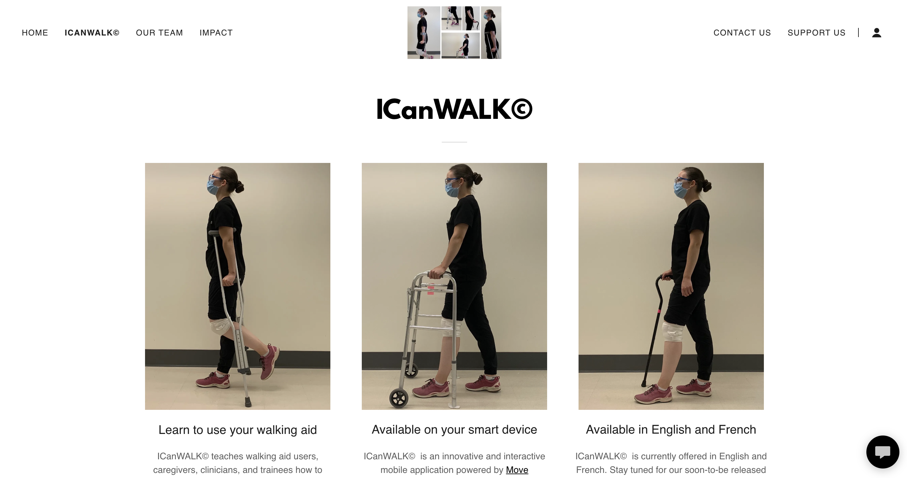

biomechanics
Date: 2020
Role: Alberta Innovates Award ($6000)
Skills: Research, Academ writing, Mobile app development
Company: Better Mobility Lab
My experience conducting research during the pandemic
The Problem
Long term walking aid use risks compression
and damage of nerves at the shoulder, forearm, and wrist.
My Solution
I proposed systematic improvements to the walking aid prescription
process, and presented at the 2020 HYRS Research Symposium.
Implementation
We also developed a learning program which utilizes video-analysis to provide personalised feedback partnership with Professor Katz' mobile app "Mover Improve."
ICanWALK© teaches walking aid users, caregivers, clinicians, and trainees how to properly fit and use a variety of walking aids.

